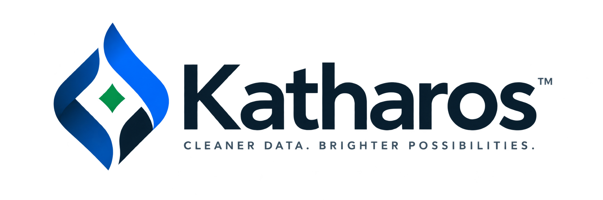

P
Privacidad
La función principal está diseñada para procesar los archivos localmente, sin necesidad de enviarlos a servicios externos.
Katharos ayuda a usuarios y organizaciones a eliminar archivos y carpetas de manera más controlada que mediante el borrado convencional, con un enfoque en privacidad, simplicidad y trazabilidad.

Eliminar un archivo o vaciar la Papelera de reciclaje no siempre implica que su contenido haya desaparecido inmediatamente del dispositivo.
La función principal está diseñada para procesar los archivos localmente, sin necesidad de enviarlos a servicios externos.
Un flujo guiado reduce la dependencia de comandos técnicos y facilita revisar cada paso antes de continuar.
Katharos busca ofrecer información sobre el resultado y generar reportes que documenten el procedimiento.
Elige el archivo o carpeta sobre el que deseas realizar el procedimiento.
Comprueba la selección y lee las advertencias antes de ejecutar una acción irreversible.
Confirma que tienes autorización y ejecuta el método disponible en la versión correspondiente.
Revisa el resultado de la operación y, cuando corresponda, el reporte generado.
La versión inicial está orientada principalmente al borrado de archivos y carpetas en Windows mediante técnicas de sobrescritura.
Katharos debe utilizarse únicamente sobre información propia o sobre la cual el usuario tenga autorización.
Versión: v0.1.0 · Sistema: Windows
Descarga disponible próximamente
Cuando el equipo publique el release oficial, este botón se reemplazará por el enlace de descarga.
SHA-256
Consulta estos documentos antes de utilizar Katharos.